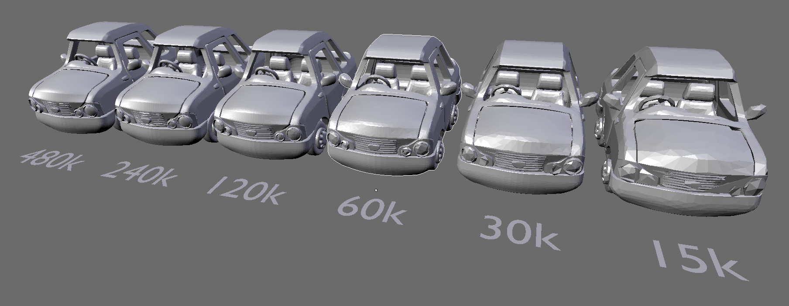
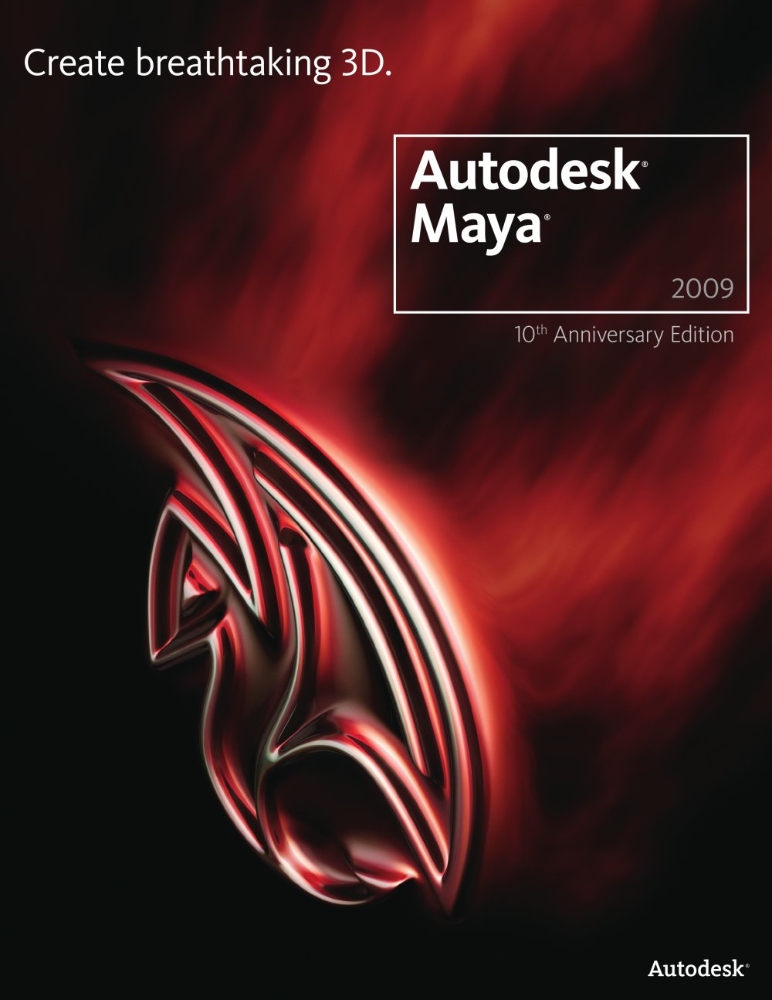

WebGL
БИТ I 2013
Ивайло Котрабаков
1201561065
Компютърна Графика и Презентации
БИТ 1 2013
WebGL (Web Graphics Library)
WebGL (Web Graphics Library) е JavaScript API за предоставяне на интерактивни 2D и 3D графики в рамките на всеки съвместим уеб браузър, без използването на плъгини. WebGL е интегриран напълно в всички уеб стандарти на браузъра позволява графичния процесор на компютъра (GPU) ускорено използване на физика и обработка на изображения и ефекти, като част от платното на уеб страница. WebGL елементи може да се смесват с други HTML елементи и наслагване с други части на страница или фон. WebGL програмите се състоят от контролен код, написан на JavaScript и Shader код, който се изпълнява от (GPU). WebGL е разработен и поддържан от нестопанска Khronos Group.
13
WebGL е нараснал от платното 3D експерименти, започнати от Владимир Вукичевич в Mozilla. Вукичевич първи демонстрира прототип на 3D Canvas през 2006 година. До края на 2007 г., както Mozilla така и Opera са направили свои собствени отделни приложения.
В началото на 2009 г., с нестопанска цел технология консорциум Khronos Group започна WebGL работната група, с участието първоначално от Apple, Google, Mozilla, Opera и др. Версия 1.0 на WebGL спецификацията е издаден март 2011 година. Към март 2012 г., председател на работната група е Кен Ръсел.
Известни ранните приложения на WebGL включва Google Maps и зиготата тяло.
WebGL работи по-сложно от нормалните web технологии защото е проектиран да работи директно с видеокартата. Това позволява зареждането на сложни 3D обекти който изискват сложни изчисления. Когато програмираме на WebGL обикновено се стремим да направим сцена от някакъв вид. Това вкючва множество последователни задачи – рисуване или извикване, всяка от които се зарежда от GPU чрез процес наречен „rendering pipeline“.
Пример 2 - Lighting (click me!)
В WebGL както и в повечето real-time 3D графики, триъгълника е основен елемент с който се рисува, затова процеса на рисуване в WebGL вкючва използването на JavaScript за да генерира информацията къде и как да бъдат създадени тези триъгълници. Както и цвят, форма и текстури. Тази информация се зарежда в GPU и връща образа на екрана.

Създаване на съдържанието

Сцените от WebGL могат да се създават без програмиране като използваме инструменти като Blender или Autodesk Maya. Сцените се експортват в WebGL. В началото това е било възможно благодарение на Inka3D, но след това е създаден и плъгин за Maya. Има и други услуги които публикуват интерактивни 3D онлайн съдържания с помощта на WebGL като p3d.in и Sketchlab. Някой игри и симулации съчетават създаването на модели, създаване на сцени и програмиране. AgentCubes е 3D инструмент/игра която дава възможност за създаването на игри без да е нужно да програмираме.
Mozilla Firefox - WebGL е активиран за всички версии след 4.0 [11] Mozilla.
Google Chrome – WebGL е активиран за всички версии след 9.[14] Google Chrome.
Opera – WebGL го има в Opera 11 и 12, но трябва да се пусне от настройките.
Internet Explorer WebGL се поддържа от IE11 Windows Blue, но трябва ръчно да се добави плъгин.
Благодаря
Ивайло Котрабаков
Компютърна Графика и Презентации
БИТ 1 2013